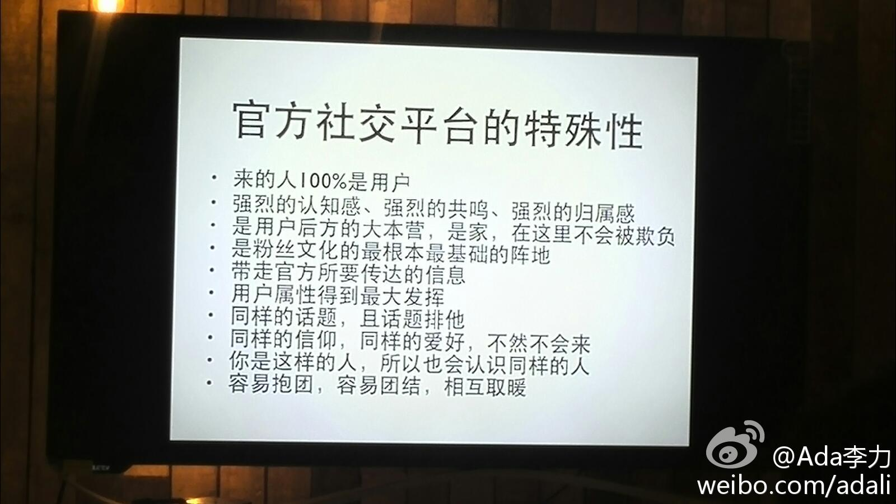

产品经理@纯银V 也这么认为，运营才能形成竞争优势和建立壁垒。//@李智勇SZ:我近来逐渐体会到，很多人其实被iPhone给带迷糊了，我们要清晰的认识到大多的产品做不到iPhone这程度，也做不到微信这程度，最多也就是不错，所以对大多产品而言，其成败很可能更多的取决于运营。@Ada李力:@公民大李 说四年前选择论坛这种社区产品，是将其定义其为官方与用户沟通交流的平台-官方社交平台，并且把这个平台打造成“家”的感觉，涉及到聚合，内容，活动，用户运营，文化等层面的操作。大李说#社区运营#是个很繁重而且非常琐碎的工作。 